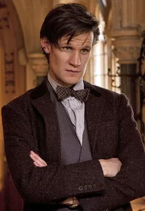
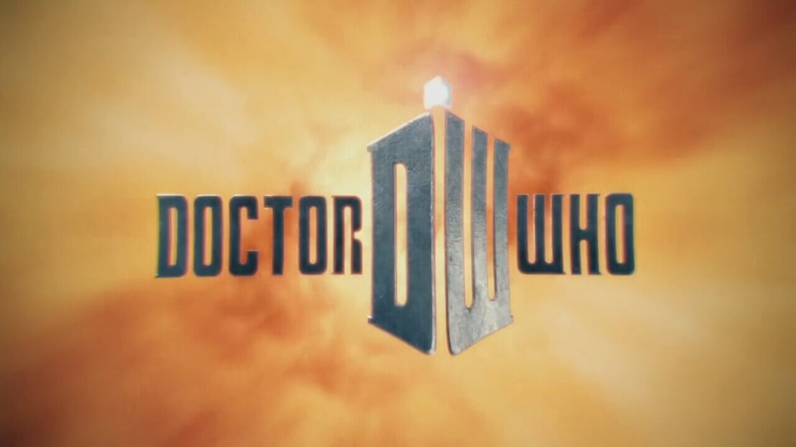

Matt Smith


Series 5 (2010)
The Eleventh Hour
The Beast Below
Victory of the Daleks
The Time of Angels
Flesh and Stone
The Vampires of Venice
Amy's Choice
The Hungry Earth
Cold Blood
Vincent and the Doctor
The Lodger
The Pandorica Opens
The Big Bang
Christmas Special (2010)
Series 6 (2011)
The Impossible Astronaut
Day of the Moon
The Curse of the Black Spot
The Doctor's Wife
The Rebel Flesh
The Almost People
A Good Man Goes to War
Let's Kill Hitler
Night Terrors
The Girl Who Waited
The God Complex
Closing Time
The Wedding of River Song
Christmas Special (2011)
The Doctor, the Widow and the Wardrobe
Series 7 (2012–2013)
Asylum of the Daleks
Dinosaurs on a Spaceship
A Town Called Mercy
The Power of Three
The Angels Take Manhattan
Christmas Special (2012)
Series 7 (2012–2013)
The Bells of Saint John
The Rings of Akhaten
Cold War
Hide
Journey to the Centre of the TARDIS
The Crimson Horror
Nightmare in Silver
The Name of the Doctor
Specials (2013)
The Day of the Doctor
The Time of the Doctor